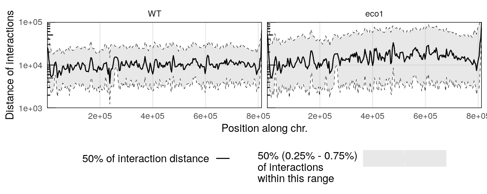

library(HiCExperiment)
library(HiContactsData)
# ---- This downloads example `.mcool` and `.pairs` files and caches them locally
coolf <- HiContactsData('yeast_wt', 'mcool')
pairsf <- HiContactsData('yeast_wt', 'pairs.gz')
# ---- This creates a connection to the disk-stored `.mcool` file
cf <- CoolFile(coolf)
cf
# ---- This creates a connection to the disk-stored `.pairs` file
pf <- PairsFile(pairsf)
pf
# ---- This imports contacts from the chromosome `II` at resolution `2000`
hic <- import(cf, focus = 'II', resolution = 2000)6 Interactions-centric analysis
Aims
This chapter focuses on the various analytical tools offered by HiContacts to compute interaction-related metrics from a HiCExperiment object.
Interaction-centric analyses consider a HiCExperiment object from the “interactions” perspective to perform a range of operations on genomic interactions.
This encompasses:
- Computing the “distance law” (a.k.a. P(s)), i.e. the distance-dependent interaction frequency
- Computing profiles of interactions between a locus of interest and the rest of the genome, (a.k.a. virtual 4C profiles)
- Computing cis/trans interaction ratios
- Computing distribution of distance-dependent interaction frequency along chromosomes, a.k.a. scalograms
Note
- Contrary to functions presented in the previous chapter, the functions described in this chapter are not: they take
HiCExperimentobjects as input and generally return data frames rather than modifiedHiCExperimentobjects. - Internally, most of the functions presented in this chapter make a call to
interactions(<HiCExperiment>)to coerce it intoGInteractions.
Generating the example
hic object üëá
To demonstrate HiContacts functionalities, we will create an HiCExperiment object from an example .cool file provided in the HiContactsData package.
hic
## `HiCExperiment` object with 471,364 contacts over 407 regions
## -------
## fileName: "/root/.cache/R/ExperimentHub/1701a09a86_7752"
## focus: "II"
## resolutions(5): 1000 2000 4000 8000 16000
## active resolution: 2000
## interactions: 34063
## scores(2): count balanced
## topologicalFeatures: compartments(0) borders(0) loops(0) viewpoints(0) centromeres(16)
## pairsFile: N/A
## metadata(0):6.1 Distance law(s)
6.1.1 P(s) from a single .pairs file
Distance laws are generally computed directly from .pairs files. This is because the .pairs files are at 1-bp resolution whereas the contact matrices (for example from .cool files) are binned at a minimum resolution.
An example .pairs file can be fetched from the ExperimentHub database using the HiContactsData package.
library(HiCExperiment)
library(HiContactsData)
pairsf <- HiContactsData('yeast_wt', 'pairs.gz')
pf <- PairsFile(pairsf)pf
## PairsFile object
## resource: /root/.cache/R/ExperimentHub/1702dcdfa3b_7753If needed, PairsFile connections can be imported directly into a GInteractions object with import().
import(pf)
## GInteractions object with 471364 interactions and 3 metadata columns:
## seqnames1 ranges1 seqnames2 ranges2 | frag1 frag2
## <Rle> <IRanges> <Rle> <IRanges> | <numeric> <numeric>
## [1] II 105 --- II 48548 | 1358 1681
## [2] II 113 --- II 45003 | 1358 1658
## [3] II 119 --- II 687251 | 1358 5550
## [4] II 160 --- II 26124 | 1358 1510
## [5] II 169 --- II 39052 | 1358 1613
## ... ... ... ... ... ... . ... ...
## [471360] II 808605 --- II 809683 | 6316 6320
## [471361] II 808609 --- II 809917 | 6316 6324
## [471362] II 808617 --- II 809506 | 6316 6319
## [471363] II 809447 --- II 809685 | 6319 6321
## [471364] II 809472 --- II 809675 | 6319 6320
## distance
## <integer>
## [1] 48443
## [2] 44890
## [3] 687132
## [4] 25964
## [5] 38883
## ... ...
## [471360] 1078
## [471361] 1308
## [471362] 889
## [471363] 238
## [471364] 203
## -------
## regions: 549331 ranges and 0 metadata columns
## seqinfo: 1 sequence from an unspecified genome; no seqlengthsWe can compute a P(s) per chromosome from this .pairs file using the distanceLaw function.
library(HiContacts)
ps <- distanceLaw(pf, by_chr = TRUE)
## Importing pairs file /root/.cache/R/ExperimentHub/1702dcdfa3b_7753 in memory. This may take a while...
ps
## # A tibble: 115 × 6
## chr binned_distance p norm_p norm_p_unity slope
## <chr> <dbl> <dbl> <dbl> <dbl> <dbl>
## 1 II 14 0.00000212 0.00000106 2.27 0
## 2 II 16 0.0000170 0.0000170 36.4 1.56
## 3 II 17 0.0000361 0.0000180 38.6 1.55
## 4 II 19 0.0000424 0.0000212 45.5 1.55
## 5 II 21 0.0000467 0.0000233 50.0 1.54
## 6 II 23 0.0000870 0.0000290 62.1 1.53
## # ℹ 109 more rowsThe plotPs() and plotPsSlope() functions are convenient ggplot2-based functions with pre-configured settings optimized for P(s) visualization.
6.1.2 P(s) for multiple .pairs files
Let’s first import a second example dataset. We’ll import pairs identified in a eco1 yeast mutant.
eco1_pairsf <- HiContactsData('yeast_eco1', 'pairs.gz')
eco1_pf <- PairsFile(eco1_pairsf)eco1_ps <- distanceLaw(eco1_pf, by_chr = TRUE)
## Importing pairs file /root/.cache/R/ExperimentHub/f9346a45c35_7755 in memory. This may take a while...
eco1_ps
## # A tibble: 115 × 6
## chr binned_distance p norm_p norm_p_unity slope
## <chr> <dbl> <dbl> <dbl> <dbl> <dbl>
## 1 II 14 0.00000201 0.00000100 0.660 0
## 2 II 16 0.0000221 0.0000221 14.5 1.46
## 3 II 17 0.0000492 0.0000246 16.2 1.46
## 4 II 19 0.0000412 0.0000206 13.5 1.45
## 5 II 21 0.0000653 0.0000326 21.5 1.45
## 6 II 23 0.0000803 0.0000268 17.6 1.44
## # ℹ 109 more rowsA little data wrangling can help plotting the distance laws for 2 different samples in the same plot.
library(dplyr)
merged_ps <- rbind(
ps |> mutate(sample = 'WT'),
eco1_ps |> mutate(sample = 'eco1')
)
plotPs(merged_ps, aes(x = binned_distance, y = norm_p, color = sample, linetype = chr)) +
scale_color_manual(values = c('#c6c6c6', '#ca0000'))
## Warning: Removed 134 rows containing missing values (`geom_line()`).plotPsSlope(merged_ps, aes(x = binned_distance, y = slope, color = sample, linetype = chr)) +
scale_color_manual(values = c('#c6c6c6', '#ca0000'))
## Warning: Removed 135 rows containing missing values (`geom_line()`).
6.1.3 P(s) from HiCExperiment objects
Alternatively, distance laws can be computed from binned matrices directly by providing HiCExperiment objects. For deeply sequenced datasets, this can be significantly faster than when using original .pairs files, but the smoothness of the resulting curves will be greatly impacted, notably at short distances.
ps_from_hic <- distanceLaw(hic, by_chr = TRUE)
## pairsFile not specified. The P(s) curve will be an approximation.
plotPs(ps_from_hic, aes(x = binned_distance, y = norm_p))
## Warning: Removed 9 rows containing missing values (`geom_line()`).plotPsSlope(ps_from_hic, aes(x = binned_distance, y = slope))
## Warning: Removed 8 rows containing missing values (`geom_line()`).6.2 Cis/trans ratios
The ratio between cis interactions and trans interactions is often used to assess the overall quality of a Hi-C dataset. It can be computed per chromosome using the cisTransRatio() function. You will need to provide a genome-wide HiCExperiment to estimate cis/trans ratios!
full_hic <- import(cf, resolution = 2000)
ct <- cisTransRatio(full_hic)
ct
## # A tibble: 16 × 6
## # Groups: chr [16]
## chr cis trans n_total cis_pct trans_pct
## <fct> <dbl> <dbl> <dbl> <dbl> <dbl>
## 1 I 186326 96738 283064 0.658 0.342
## 2 II 942728 273966 1216694 0.775 0.225
## 3 III 303980 127087 431067 0.705 0.295
## 4 IV 1858062 418218 2276280 0.816 0.184
## 5 V 607090 220873 827963 0.733 0.267
## 6 VI 280282 127771 408053 0.687 0.313
## # ℹ 10 more rowsIt can be plotted using ggplot2-based visualization functions.
ggplot(ct, aes(x = chr, y = cis_pct)) +
geom_col(position = position_stack()) +
theme_bw() +
guides(x=guide_axis(angle = 90)) +
scale_y_continuous(labels = scales::percent) +
labs(x = 'Chromosomes', y = '% of cis contacts')Cis/trans contact ratios will greatly vary depending on the cell cycle phase the sample is in! For instance, chromosomes during the mitosis phase of the cell cycle have very little trans contacts, due to their structural organization and individualization.
6.3 Virtual 4C profiles
Interaction profile of a genomic locus of interest with its surrounding environment or the rest of the genome is frequently generated. In some cases, this can help in identifying and/or comparing regulatory or structural interactions.
For instance, we can compute the genome-wide virtual 4C profile of interactions anchored at the centromere in chromosome II (located at ~ 238kb).
library(GenomicRanges)
v4C <- virtual4C(full_hic, viewpoint = GRanges("II:230001-240000"))
v4C
## GRanges object with 6045 ranges and 4 metadata columns:
## seqnames ranges strand | score viewpoint
## <Rle> <IRanges> <Rle> | <numeric> <character>
## [1] I 1-2000 * | 0.00000000 II:230001-240000
## [2] I 2001-4000 * | 0.00000000 II:230001-240000
## [3] I 4001-6000 * | 0.00129049 II:230001-240000
## [4] I 6001-8000 * | 0.00000000 II:230001-240000
## [5] I 8001-10000 * | 0.00000000 II:230001-240000
## ... ... ... ... . ... ...
## [6041] XVI 940001-942000 * | 0.000775721 II:230001-240000
## [6042] XVI 942001-944000 * | 0.000000000 II:230001-240000
## [6043] XVI 944001-946000 * | 0.000000000 II:230001-240000
## [6044] XVI 946001-948000 * | 0.000000000 II:230001-240000
## [6045] XVI 948001-948066 * | 0.000000000 II:230001-240000
## center in_viewpoint
## <numeric> <logical>
## [1] 1000.5 FALSE
## [2] 3000.5 FALSE
## [3] 5000.5 FALSE
## [4] 7000.5 FALSE
## [5] 9000.5 FALSE
## ... ... ...
## [6041] 941000 FALSE
## [6042] 943000 FALSE
## [6043] 945000 FALSE
## [6044] 947000 FALSE
## [6045] 948034 FALSE
## -------
## seqinfo: 16 sequences from an unspecified genome; no seqlengthsggplot2 can be used to visualize the 4C-like profile over multiple chromosomes.
df <- as_tibble(v4C)
ggplot(df, aes(x = center, y = score)) +
geom_area(position = "identity", alpha = 0.5) +
theme_bw() +
labs(x = "Position", y = "Contacts with viewpoint") +
scale_x_continuous(labels = scales::unit_format(unit = "M", scale = 1e-06)) +
facet_wrap(~seqnames, scales = 'free_y')This clearly highlights trans interactions of the chromosome II centromere with the centromeres from other chromosomes.
6.4 Scalograms
Scalograms were introduced in Lioy et al. (2018) to investigate distance-dependent contact frequencies for individual genomic bins along chromosomes.
To generate a scalogram, one needs to provide a HiCExperiment object with a valid associated pairsFile.
pairsFile(hic) <- pairsf
scalo <- scalogram(hic)
## Importing pairs file /root/.cache/R/ExperimentHub/1702dcdfa3b_7753 in memory. This may take a while...
plotScalogram(scalo |> filter(chr == 'II'), ylim = c(1e3, 1e5))Several scalograms can be plotted together to compare distance-dependent contact frequencies along a given chromosome in different samples.
eco1_hic <- import(
CoolFile(HiContactsData('yeast_eco1', 'mcool')),
focus = 'II',
resolution = 2000
)
## see ?HiContactsData and browseVignettes('HiContactsData') for documentation
## loading from cache
eco1_pairsf <- HiContactsData('yeast_eco1', 'pairs.gz')
## see ?HiContactsData and browseVignettes('HiContactsData') for documentation
## loading from cache
pairsFile(eco1_hic) <- eco1_pairsf
eco1_scalo <- scalogram(eco1_hic)
## Importing pairs file /root/.cache/R/ExperimentHub/f9346a45c35_7755 in memory. This may take a while...
merged_scalo <- rbind(
scalo |> mutate(sample = 'WT'),
eco1_scalo |> mutate(sample = 'eco1')
)
plotScalogram(merged_scalo |> filter(chr == 'II'), ylim = c(1e3, 1e5)) +
facet_grid(~sample)
This example points out the overall longer interactions within the long arm of the chromosome II in an eco1 mutant.
References
Lioy, V. S., Cournac, A., Marbouty, M., Duigou, S., Mozziconacci, J., Espéli, O., Boccard, F., & Koszul, R. (2018). Multiscale structuring of the e. Coli chromosome by nucleoid-associated and condensin proteins. Cell, 172(4), 771–783.e18. https://doi.org/10.1016/j.cell.2017.12.027